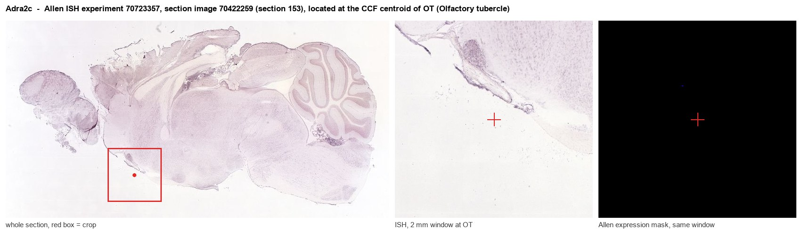
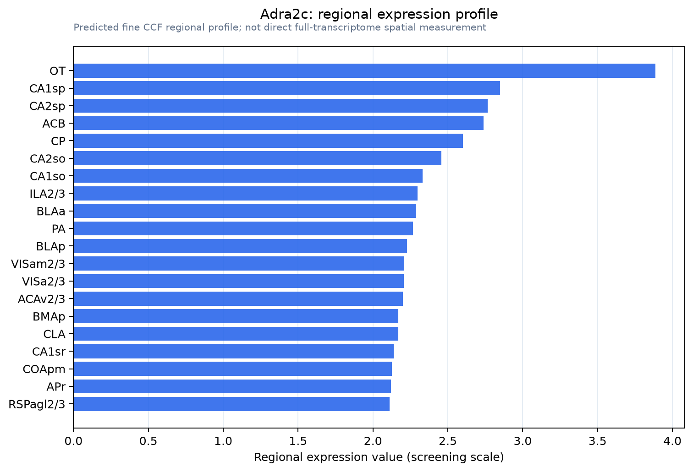

Adra2c
Alpha-2C adrenergic receptor (Alpha-2 adrenergic receptor subtype C4) (Alpha-2C adrenoreceptor) (Alpha-2C adrenoceptor) (Alpha-2CAR)
Spatial tier: REGION_BIASED · Class: GPCR · Top region: OT (Olfactory tubercle) · Positive regions: 55/554
41.4Discovery Score
40.0Targetability Score
CEvidence grade C
What this means: Adra2c: fine CCF profile is region-biased toward OT (top regions: OT, CA1sp, CA2sp, ACB, CP); this is a discovery lead, not direct proof.
Function in OT: evidence, prediction, innovation
- Gene function
- ADRA2C is the alpha-2C subtype of the adrenergic receptor family, a Gi/o-coupled GPCR for noradrenaline and adrenaline. It inhibits adenylyl cyclase and N/P-Q-type calcium channels, and functions mainly as a presynaptic autoreceptor/heteroreceptor that dampens transmitter release at low agonist concentrations; in the CNS it is concentrated in striatal territories.
- Region function
- The olfactory tubercle is a ventral striatal olfactory cortex that receives direct olfactory bulb input and dense VTA dopamine input; its medium spiny neurons and islands of Calleja link odour cues to reward, motivation and odour-guided approach behaviour.
- Published in this region
- expression only Holmberg 2003, using [3H]RX821002 and [3H]rauwolscine autoradiography in wild-type and alpha-2C-overexpressing mice, reported the highest alpha-2C binding densities in striatal structures including the olfactory tubercle, nucleus accumbens and caudate-putamen; no functional experiment has targeted the tubercle specifically. Arponen 2014 confirmed striatal specificity of the alpha-2C PET tracer 11C-ORM-13070 using knockout mice.
- Predicted function
- Prediction: in the olfactory tubercle alpha-2C sits on medium spiny neurons and on incoming terminals, where noradrenaline from locus coeruleus would use it to suppress cAMP/PKA and presynaptic calcium entry, damping dopamine- and odour-driven excitation. Local alpha-2C blockade (JP-1302) or Adra2c deletion should increase tubercle responsiveness to odour cues and strengthen odour-reward learning and arousal-dependent odour approach, whereas alpha-2C agonism should blunt learned odour preference.
- Innovation
- ★★★★☆ 4/5 Tubercle alpha-2C expression is among the highest in the brain, yet all behavioural work has focused on cortex, accumbens and prefrontal noradrenergic function.
- Tools
- Adra2c knockout and overexpressing mouse lines; selective antagonist JP-1302; PET ligand 11C-ORM-13070 and antagonist ORM-12741; Adra2c-Cre driver lines from GENSAT/Allen; olfactory tubercle D1/D2-Cre lines for cell-type targeting.
- References
Direct evidence located at the region

Allen ISH experiment 70723357, section image 70422259 (section 153): the section that contains the CCF centroid of Olfactory tubercle according to the Allen image-to-atlas alignment (reference_to_image), with a 2 mm window around that point. Left: whole section, red box = window. Middle: ISH signal. Right: Allen's expression-mask view of the same window. open this image in the Allen viewer
Look it up yourself: Allen Mouse Brain ISH for Adra2cAllen reference atlas: OT (structure 754)ABC Atlas MERFISH viewer(in the ABC Atlas choose dataset MERFISH-C57BL6J-638850-CCF, colour cells by gene "Adra2c" or by parcellation_substructure "OT")All genes confined to OT + 3-D brain
Direct spatial evidence
MERFISH REGION LOCATOR

Regional expression figure

Predicted WMB × fine-CCF profile; not direct full-transcriptome spatial measurement.
Spatial profile
Evidence and specificity
- Evidence status
- PREDICTED_FINE
- Direct sources
- None; predicted localization only
- Exclusive threshold
- 12 positive regions out of 554
- Spatial specificity
- 0.266
- Top-region fraction
- 0.040
- Filter status
- PASS
Interpretation limits
- Cell-type-to-region projection is imputed expression, not direct spatial measurement.
- Adult reference atlases do not establish stability across age, sex, strain, state, or disease.
- Transcript abundance does not guarantee protein abundance or genetic-tool performance.